Subsistema Gestão de Perfis
Perfis Tutor e Passeador (375 × 812 px) e Atendente (1180 × 740 px).
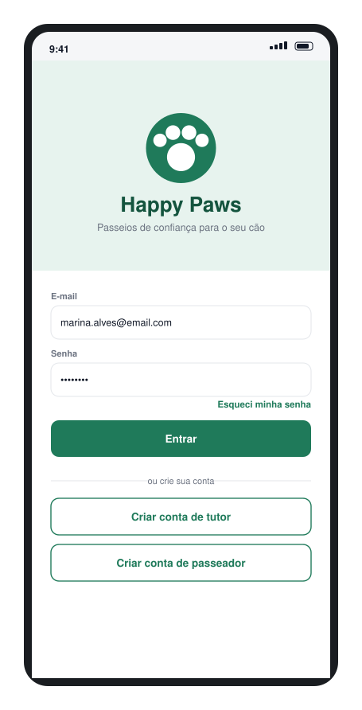
LoginPage/entrar
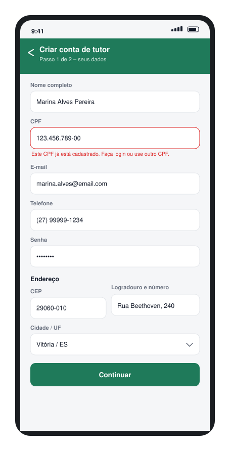
CadastroTutorPage/cadastro/tutor
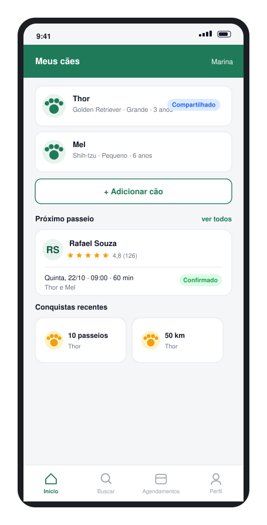
MeusCachorrosPage/cachorros
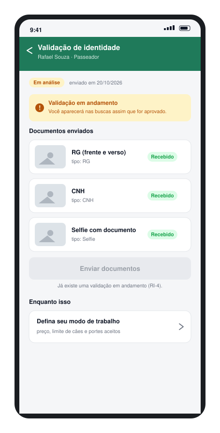
EnvioDocumentosPage/validacao
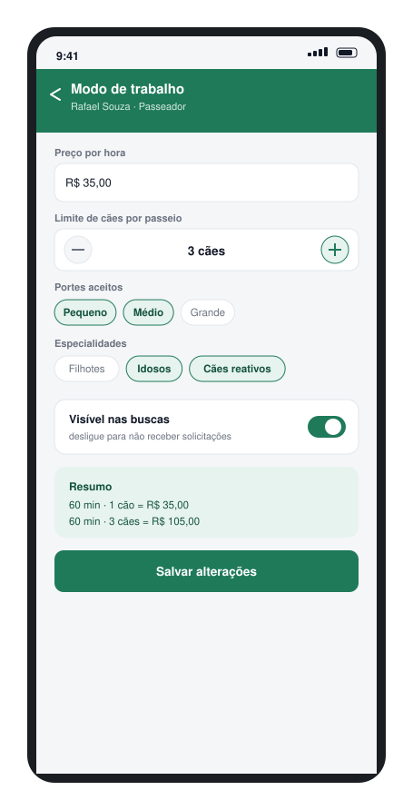
ModoTrabalhoPage/modo-trabalho
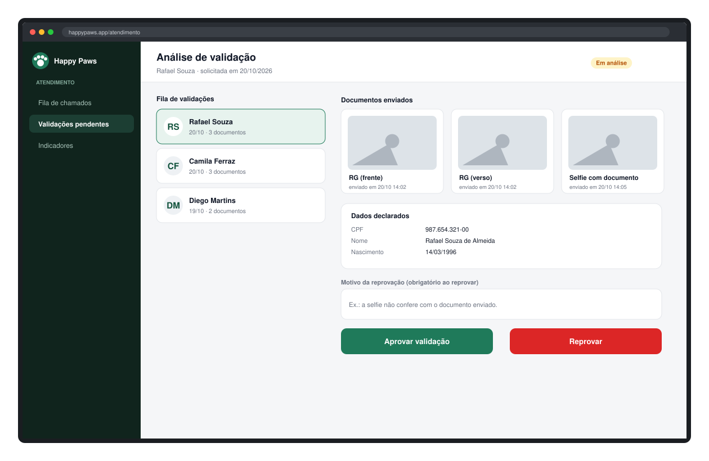
AnaliseValidacaoPage
/atendimento/validacoes/[id]
Subsistema Serviços
Do agendamento ao pagamento, à execução e à avaliação do passeio.
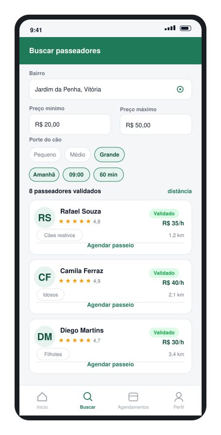
BuscaPasseadoresPage/passeadores
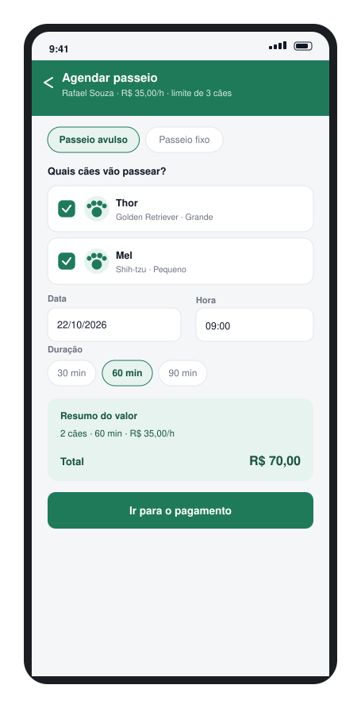
AgendamentoAvulsoPage
/passeadores/[id]/agendar
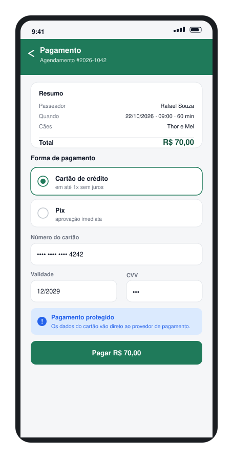
PagamentoPage
/agendamentos/[id]/pagamento
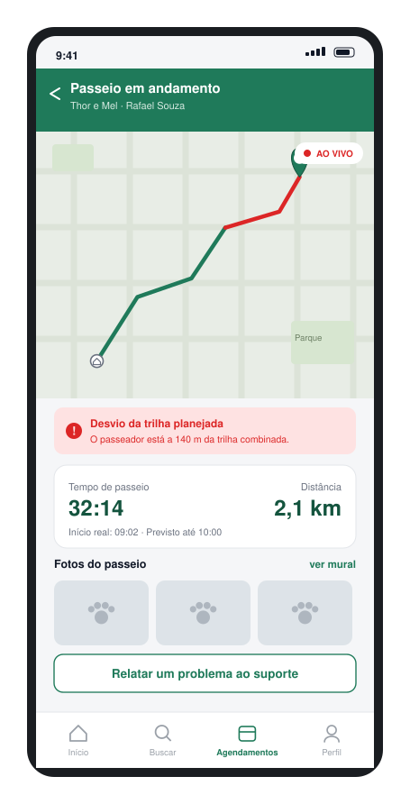
AcompanhamentoPasseioPage
/passeios/[id]/acompanhar
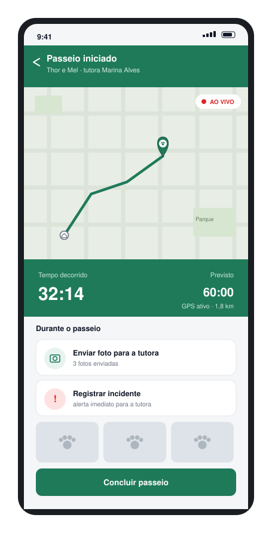
ExecucaoPasseioPage
/passeios/[id]/executar
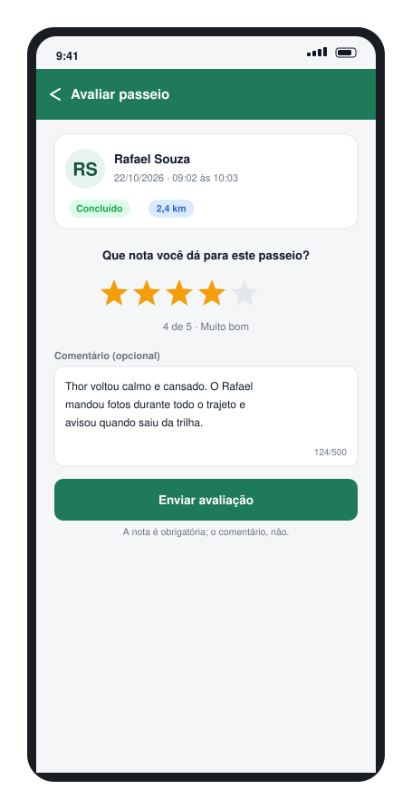
AvaliacaoPage
/passeios/[id]/avaliar
Subsistema Suporte
Abertura de chamado pelo usuário e fila de atendimento do Atendente.
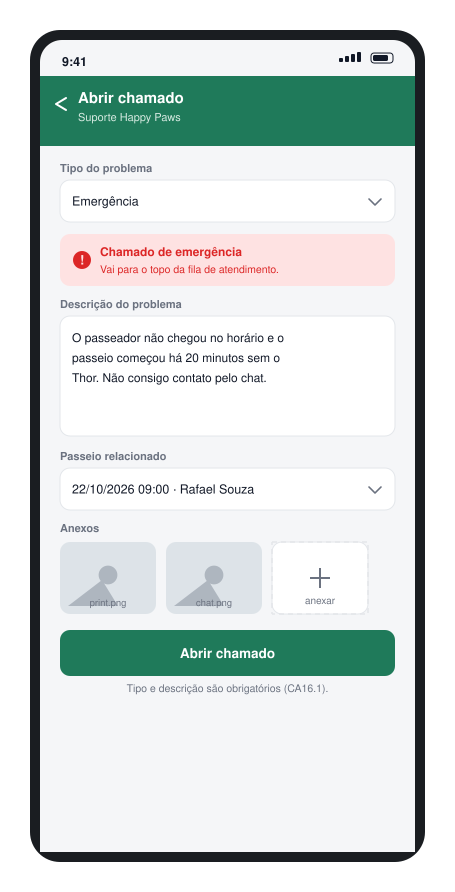
AbrirChamadoPage/suporte/novo
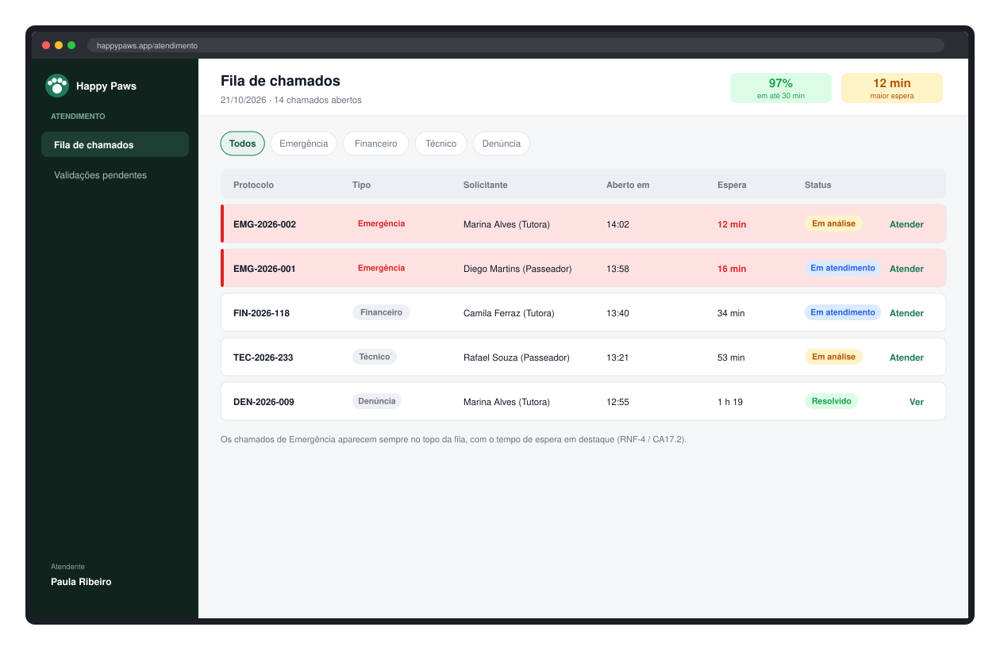
FilaAtendimentoPage
/atendimento/chamados